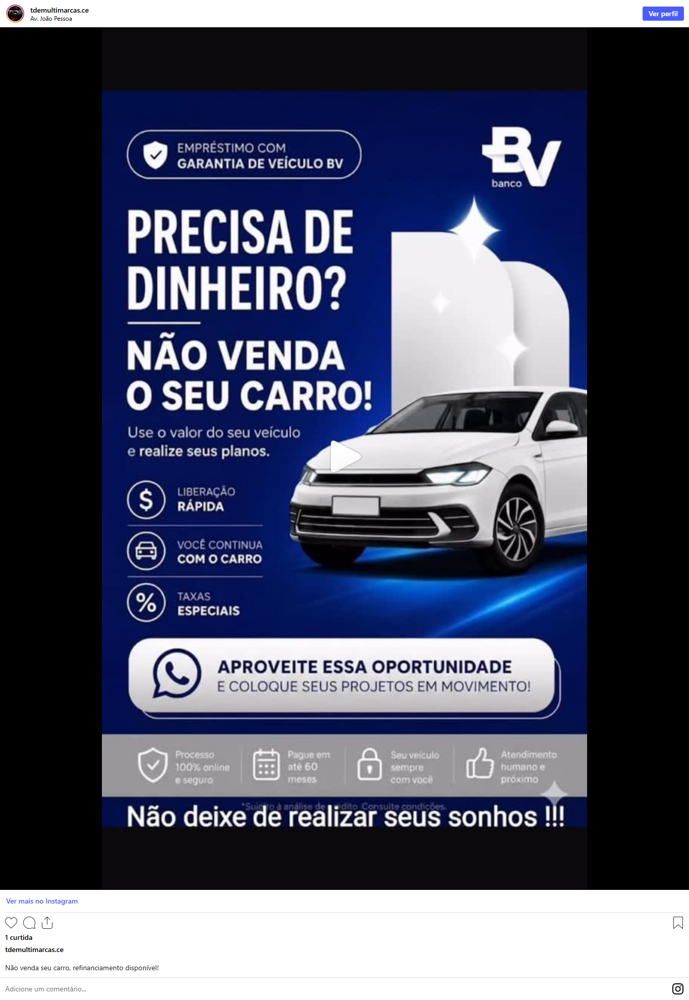

Sistema de Investigação de Marca e Identidade Online
https://www.instagram.com/reels/DdEP-9cxlFH/
Prioridade: HIGH · Cenário: C_POSSIBLE_OFFICIAL_CHANNEL · Revisão humana: PENDING
A publicação no Instagram da loja de veículos '@tdemultimarcas.ce' oferta refinanciamento ('Empréstimo com Garantia de Veículo BV') utilizando peça publicitária com o logotipo oficial 'BV banco' e identidade visual do Banco BV em destaque, sem exibir a marca/identificação da própria loja na arte, sem informar CNPJ/razão social e omitindo a declaração obrigatória de correspondente bancário exigida pela Resolução CMN nº 4.935/2021. Configura-se forte indício de comunicação passível de confusão com canal oficial ou descumprimento das regras de transparência de COBAN (STRONG_INDICATION / HIGH).

| Ref | Tipo | Local | Conteúdo |
|---|---|---|---|
| E-URL | domain | url | URL final: https://www.instagram.com/reels/DdEP-9cxlFH/ (domínio: www.instagram.com) |
| E-DISC-001 | text | search_index | Índice de busca (grounding): TDE Multimarcas (@tdemultimarcas.ce) • Reel do Instagram |
| E-SHOT-VIEWPORT | screenshot | viewport | evidence\C7ee31a3641\attempt-1\viewport.png (sha256 995ce387b4c42a98…) |
| E-SHOT-FULL | screenshot | page | evidence\C7ee31a3641\attempt-1\fullpage.png (sha256 a1e57ec69c6c77a2…) |
| E-TITLE | title | head | Instagram @tdemultimarcas.ce - tdemultimarcas.ce Não venda seu carro, refinanciamento disponível! |
| E-FOLD | text | viewport (acima da dobra) | tdemultimarcas.ce Av. João Pessoa Ver perfil |
| E-CONTACT-1 | contact | page | <https://www.instagram.com/stories/tdemultimarcas.ce/?utm_source=ig_embed&ig_rid=Ap-h0x388faX0qdbYLt-87u> |
| E-CONTACT-2 | contact | page | tdemultimarcas.ce <https://www.instagram.com/tdemultimarcas.ce/?utm_source=ig_embed&ig_rid=Ap-h0x388faX0qdbYLt-87u> |
| E-CONTACT-3 | contact | page | Av. João Pessoa <https://www.instagram.com/explore/locations/305042121/av-jo-o-pessoa/?utm_source=ig_embed&ig_rid=Ap-h0x388faX0qdbYLt-87u> |
| E-CONTACT-4 | contact | page | Ver perfil <https://www.instagram.com/tdemultimarcas.ce/?utm_source=ig_embed&ig_rid=Ap-h0x388faX0qdbYLt-87u> |
| E-CONTACT-5 | contact | page | <https://www.instagram.com/reel/DdEP-9cxlFH/?utm_source=ig_embed&ig_rid=Ap-h0x388faX0qdbYLt-87u> |
| E-CONTACT-6 | contact | page | tdemultimarcas.ce 2.434 posts · 6K seguidores <https://www.instagram.com/tdemultimarcas.ce/?utm_source=ig_embed&ig_rid=Ap-h0x388faX0qdbYLt-87u> |
| E-CONTACT-7 | contact | page | Ver mais no Instagram <https://www.instagram.com/tdemultimarcas.ce/?utm_source=ig_embed&ig_rid=Ap-h0x388faX0qdbYLt-87u> |
| E-CONTACT-8 | contact | page | Curtir <https://www.instagram.com/reel/DdEP-9cxlFH/?utm_source=ig_embed&ig_rid=Ap-h0x388faX0qdbYLt-87u> |
| E-CONTACT-9 | contact | page | Comentar <https://www.instagram.com/reel/DdEP-9cxlFH/?utm_source=ig_embed&ig_rid=Ap-h0x388faX0qdbYLt-87u> |
| E-CONTACT-10 | contact | page | Compartilhar <https://www.instagram.com/reel/DdEP-9cxlFH/?utm_source=ig_embed&ig_rid=Ap-h0x388faX0qdbYLt-87u> |
| E-CONTACT-11 | contact | page | Salvar <https://www.instagram.com/reel/DdEP-9cxlFH/?utm_source=ig_embed&ig_rid=Ap-h0x388faX0qdbYLt-87u> |
| E-CONTACT-12 | contact | page | 1 curtida <https://www.instagram.com/reel/DdEP-9cxlFH/?utm_source=ig_embed&ig_rid=Ap-h0x388faX0qdbYLt-87u> |
| E-CONTACT-13 | contact | page | tdemultimarcas.ce <https://www.instagram.com/tdemultimarcas.ce/?utm_source=ig_embed&ig_rid=Ap-h0x388faX0qdbYLt-87u> |
| E-CONTACT-14 | contact | page | Adicione um comentário... <https://www.instagram.com/reel/DdEP-9cxlFH/?utm_source=ig_embed&ig_rid=Ap-h0x388faX0qdbYLt-87u> |
| E-CONTACT-15 | contact | page | Instagram <https://www.instagram.com/reel/DdEP-9cxlFH/?utm_source=ig_embed&ig_rid=Ap-h0x388faX0qdbYLt-87u> |
| E-IMG-1 | image | page (acima da dobra) | imagem alt='Post do Instagram compartilhado por @tdemultimarcas.ce' src=https://scontent-gig4-2.cdninstagram.com/v/t51.71878-15/801149419_1733569881268019_6011673938729444159_n.jpg?stp=dst-jpg_e15_tt6&_nc_cat=103&_nc_map=urlgen_bucketless&ig_cache_key=Mzk4MjM3ODI2Nzc4ODU5 (1366x1708, acima da dobra) |
| Dimensão | Sinal | Achado | Refs |
|---|---|---|---|
| VISUAL_IDENTITY | CONFUSION | Peça gráfica do post adota integralmente o padrão visual e cores institucionais do Banco BV para anunciar 'Empréstimo com Garantia de Veículo BV'. | E-SHOT-VIEWPORT E-SHOT-FULL |
| DECLARED_COMMERCIAL_IDENTITY | CONFUSION | O perfil @tdemultimarcas.ce não apresenta razão social nem CNPJ na publicação ou na arte gráfica, que destaca apenas a marca do banco. | E-TITLE E-FOLD E-SHOT-FULL |
| CORRESPONDENT_TRANSPARENCY | CONFUSION | Nenhuma declaração de atuação como correspondente bancário ou prestador de serviços ao Banco BV foi exibida na arte ou na legenda. | E-SHOT-FULL E-TITLE |
| INSTITUTIONAL_LANGUAGE | CONFUSION | A peça anuncia diretamente o produto ('Empréstimo com Garantia de Veículo BV', 'Processo 100% online e seguro') como se fosse comunicação institucional direta do banco. | E-SHOT-FULL |
| LOGO_USAGE | CONFUSION | Uso proeminente do logotipo oficial 'BV banco' no canto superior direito da imagem sem identificação da loja terceira na peça gráfica. | E-SHOT-VIEWPORT E-SHOT-FULL E-IMG-1 |
| SERVICE_JOURNEY | CONFUSION | Oferta de crédito/refinanciamento com chamada para atendimento via WhatsApp na peça que ostenta exclusivamente a marca BV. | E-SHOT-FULL E-TITLE |
| CONTACT_CHANNELS | NEUTRAL | Publicação em perfil de rede social de loja multimarcas (@tdemultimarcas.ce) com ícone de WhatsApp ilustrativo na imagem, sem número explícito extraído. | E-URL E-CONTACT-2 E-SHOT-FULL |
| CONSUMER_CONFUSION | CONFUSION | Alto risco de confusão para o consumidor devido ao uso de peça com aparência oficial do Banco BV por loja de veículos sem aviso de correspondente nem CNPJ. | E-SHOT-VIEWPORT E-SHOT-FULL |
A publicação no Instagram da loja de veículos '@tdemultimarcas.ce' oferta refinanciamento ('Empréstimo com Garantia de Veículo BV') utilizando peça publicitária com o logotipo oficial 'BV banco' e identidade visual do Banco BV em destaque, sem exibir a marca/identificação da própria loja na arte, sem informar CNPJ/razão social e omitindo a declaração obrigatória de correspondente bancário exigida pela Resolução CMN nº 4.935/2021. Configura-se forte indício de comunicação passível de confusão com canal oficial ou descumprimento das regras de transparência de COBAN (STRONG_INDICATION / HIGH).
Nenhum CNPJ ou razão social identificáveis no conteúdo coletado.
| Tipo | Valor | Ref | Contexto |
|---|---|---|---|
| domain | instagram.com | E-URL | |
| social_profile | https://www.instagram.com/reels/DdEP-9cxlFH/ | E-URL | |
| social_profile | https://www.instagram.com/stories/tdemultimarcas.ce/?utm_source=ig_embed&ig_rid=Ap-h0x388faX0qdbYLt-87u | E-CONTACT-1 | |
| social_profile | https://www.instagram.com/tdemultimarcas.ce/?utm_source=ig_embed&ig_rid=Ap-h0x388faX0qdbYLt-87u | E-CONTACT-2 | |
| social_profile | https://www.instagram.com/explore/locations/305042121/av-jo-o-pessoa/?utm_source=ig_embed&ig_rid=Ap-h0x388faX0qdbYLt-87u | E-CONTACT-3 | |
| social_profile | https://www.instagram.com/reel/DdEP-9cxlFH/?utm_source=ig_embed&ig_rid=Ap-h0x388faX0qdbYLt-87u | E-CONTACT-5 | |
| trade_name | @tdemultimarcas.ce | E-TITLE |
Mapeamento indicativo para apoio à auditoria. Não constitui conclusão regulatória; a decisão definitiva pertence à auditoria.
Fonte: NORMATIVE
Art. 14. O contrato de correspondente deve estabelecer: [...] II - vedação à utilização, pelo contratado, de logomarca ou de outros atributos que sejam similares aos adotados pela instituição contratante em suas agências, postos de atendimento, sítio eletrônico na internet, aplicativo ou outras plataformas de comunicação em rede;
Hipótese: Uso de logomarca ou de atributos similares aos adotados pela contratante em seus canais. A norma disciplina correspondentes contratados; o responsável não foi identificado como correspondente.
Evidência observada: E-IMG-1 E-SHOT-FULL E-SHOT-VIEWPORT
Informação faltante:
Fonte: NORMATIVE
Art. 14. O contrato de correspondente deve estabelecer: [...] III - divulgação ao público, pelo contratado, de sua condição de prestador de serviços à instituição contratante, identificada pelo nome com que é conhecida no mercado, com descrição dos produtos e serviços oferecidos e canais de contato da instituição contratante, inclusive de sua ouvidoria, em local visível, em destaque e em formato legível, por meio de: a) sítio eletrônico do correspondente na internet, acessível na página inicial; b) aplicativo e outras plataformas de comunicação em rede do correspondente; [...]
Hipótese: Divulgação ao público da condição de prestador de serviços à contratante ausente, insuficiente ou sem destaque. A norma disciplina correspondentes contratados; o responsável não foi identificado como correspondente.
Evidência observada: E-FOLD E-SHOT-FULL E-SHOT-VIEWPORT E-TITLE
Informação faltante:
Fonte: NORMATIVE
Art. 3º O correspondente atua por conta e sob as diretrizes da instituição contratante, que assume inteira responsabilidade pelo atendimento prestado aos clientes e usuários por meio do contratado.
Hipótese: Atendimento ao público prestado por meio do contratado em condições que podem não seguir as diretrizes da contratante. A norma disciplina correspondentes contratados; o responsável não foi identificado como correspondente.
Evidência observada: E-SHOT-FULL E-TITLE
Informação faltante:
Se o responsável não for correspondente contratado, os indícios podem caracterizar uso indevido de marca ou fraude, fora do escopo da Res. 4.935: avaliar encaminhamento às áreas jurídica/segurança.
Limitações: requisitos contratuais/internos não fornecidos: mapeamento limitado ao texto normativo
| Fonte | Consulta / hipótese | URL original | Título / trecho |
|---|---|---|---|
| grounding | H6-platform:Instagram | https://www.instagram.com/reels/DdEP-9cxlFH/ | TDE Multimarcas (@tdemultimarcas.ce) • Reel do Instagram |
Original: https://www.instagram.com/reels/DdEP-9cxlFH/
Final: https://www.instagram.com/reels/DdEP-9cxlFH/
| Artefato | Caminho | SHA-256 | Bytes |
|---|---|---|---|
| screenshot_viewport | evidence\C7ee31a3641\attempt-1\viewport.png | 995ce387b4c42a98f9aab8204445fa42c23f03f8edddd95c3fc828b8a87bc2f9 | 483755 |
| screenshot_full | evidence\C7ee31a3641\attempt-1\fullpage.png | a1e57ec69c6c77a20aa27fba5750cca298c3f42c5e65889285df584f367bff71 | 1056046 |
| html | evidence\C7ee31a3641\attempt-1\page.html.txt | d1e7efbaef15e9aafdf49657b9f167a5ecf007c52f40a477f7aafbb7c1a6796a | 258239 |
| text | evidence\C7ee31a3641\attempt-1\text.txt | 20a286b4b4190ba345c7363bdce014884174bd01518920db54e9b53577cb8dec | 358 |
| page_data | evidence\C7ee31a3641\attempt-1\page.json | 9014d7eec9e6f6005cc0d90b8142b2fcb2046f3a15e47b2c521ae6488ffee9a5 | 9693 |
| Quando | De | Para | Nota |
|---|